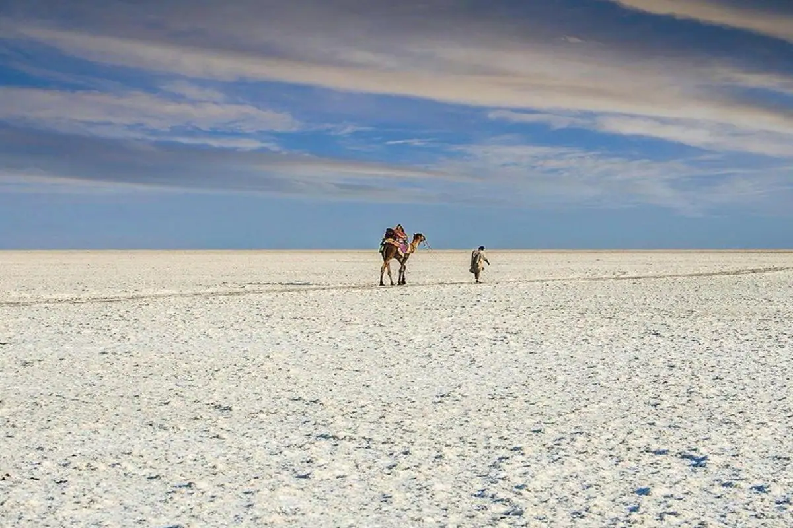

Kutch White Desert: A Sea of White
The Kutch White Desert, also known as Rann of Kutch, is a mesmerizing salt desert that stretches as far as the eye can see.
Fun Fact:
~It is one of the largest salt deserts in the world!
Things to Explore at Kutch White Desert:
-
The Sunset Views:
Witness the breathtaking sunset that paints the desert in hues of orange and pink!
-
The Local Culture:
Experience the vibrant culture and traditions of the local tribes!
-
The Wildlife:
Explore the unique wildlife that inhabits this arid region!
-
The Handicrafts:
Shop for exquisite handicrafts and textiles made by local artisans!
-
The Festivals:
Participate in the Rann Utsav, a cultural festival celebrating the rich heritage of Kutch!
Why Visit Kutch White Desert?
!Because it’s a surreal experience that transports you to a different world of beauty and tranquility!